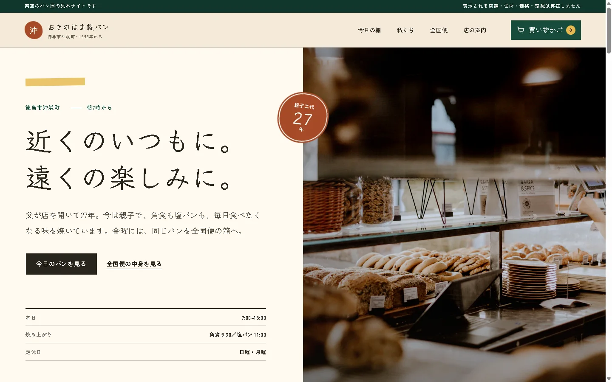
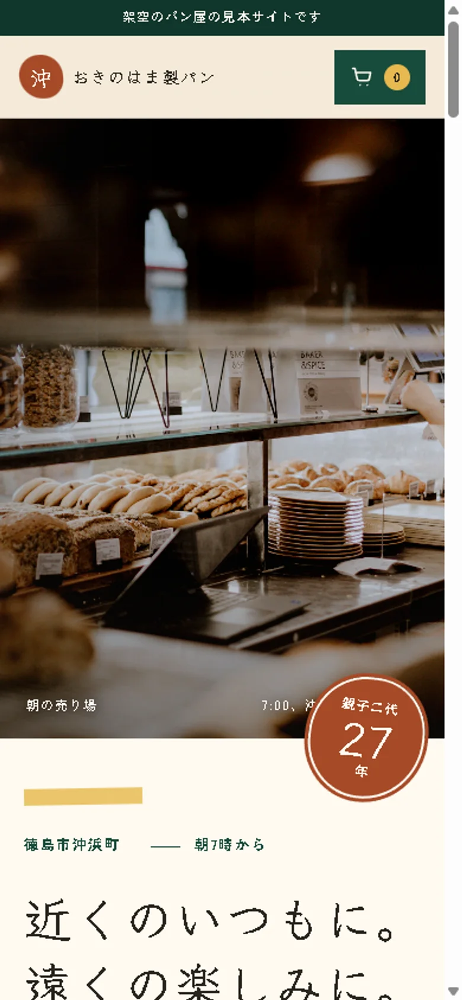
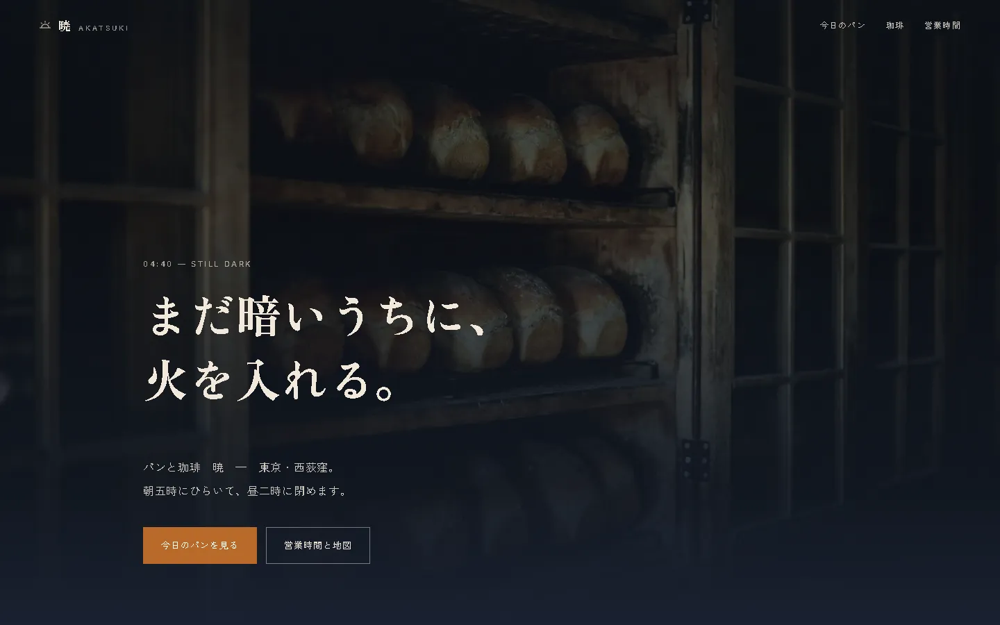

01 — Web
見本（架空の店）


おきのはま製パンOKINOHAMA — LOCAL BAKERY
- 1ページ
- 親子二代の物語
- 全国便・注文体験
- 動きつき
- スマホ対応
徳島市沖浜町で親子二代、1999年から続くパン屋（架空）。以前の見本「パンと珈琲 暁」を、地元で長く支えてくださる方と新しく知る方の両方へ届くように作り直しました。毎日の定番6品を値段・焼き上がり時刻まで具体的に書き、金曜発送の全国便は買い物かごから注文確認まで実際に操作できます。
サイトを見る ↗作り直した前と後Before / After

- 名前
パンと珈琲 暁→ おきのはま製パン（徳島市沖浜町から） - 最初の一言
まだ暗いうちに、火を入れる。→ 近くのいつもに。遠くの楽しみに。 - パン
暗い窯の世界と品書き→ 定番6品を値段・大きさ・焼き上がり時刻で - 足したもの親子二代の話、沖浜町との関係、全国発送の箱、架空の買い物かご
- 動き
夜明けの色が変わる→ 包み紙が開く冒頭と、店から全国へ伸びる配送のひも